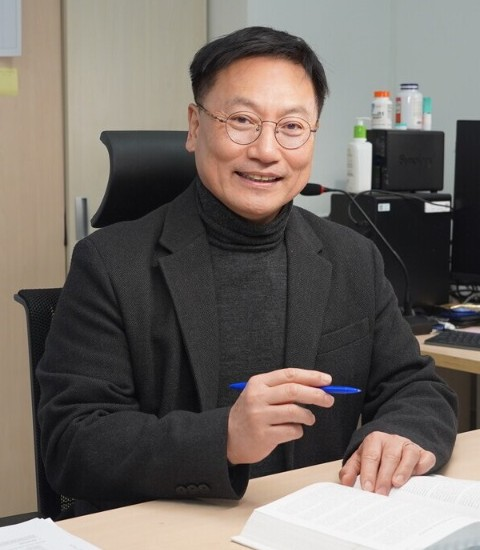

안녕하십니까?
KENTECH 에너지AX대학원을 찾아주신 여러분을 진심으로 환영합니다.
지금 우리는 2050 탄소중립을 향한 에너지 녹색전환(GX)과 인공지능이 산업 전반을 바꾸는 AI 대전환(AX)이 맞물린 거대한 변화의 한가운데에 서 있습니다. AI의 발전에는 막대한 에너지가 필요하고, 재생에너지와 전력망, 배터리가 복잡하게 얽힌 미래 에너지 시스템은 AI 없이는 운영할 수 없습니다. 에너지와 AI는 이제 서로를 필요로 하는 하나의 문제가 되었습니다.
KENTECH 에너지AX대학원은 과학기술정보통신부 인공지능혁신대학원 사업의 지원으로 출범한 국내 유일의 에너지 특화 AX대학원입니다. 에너지AI·차세대그리드·에너지신소재·수소·환경기후기술 등 KENTECH의 모든 전공이 함께하며, 에너지그리드와 에너지소재라는 에너지 산업의 두 축에서 AI 전환을 이끌어 가겠습니다.
우리 대학원은 단순한 AI 기술 습득을 넘어, 에너지 산업의 도메인 지식과 AI 기술을 융합하여 국가 에너지 대전환을 주도할 실전적 AX 혁신인재를 양성합니다. 트랜스포머와 LLM에 대한 깊은 이해를 바탕으로 한 탄탄한 기본기, 산업체와 함께 발굴한 실전 문제를 실계통·실공정 데이터로 해결하는 연구, 그리고 캠퍼스 마이크로그리드와 K-그리드 테스트베드에서의 실증까지, 배움이 곧바로 현장의 혁신으로 이어지는 교육을 약속드립니다.
또한 산업체 연구진이 캠퍼스에 상주하는 상주형 산학협력, 교내 교수와 기업 겸임교수가 함께하는 공동 지도, 교육과 연구 결과, 데이터를 세계와 나누는 개방형 오픈소스 커뮤니티를 통해 “에너지AX는 KENTECH”이라는 이름에 걸맞은 교육·연구 허브로 자리매김하겠습니다.
연구에만 몰입할 수 있도록 전원 전액 장학금과 기숙사, 연구 장비를 지원합니다. 에너지의 미래를 AI로 바꾸고자 하는 여러분의 도전을 기다리겠습니다. 많은 관심과 참여를 부탁드립니다.
감사합니다.
원장 프로필
| 성명 | 김종권 (Chong-Kwon Kim) |
|---|---|
| 소속·직위 | 한국에너지공과대학교 에너지공학부 석좌교수 · 에너지AI연구소장 · 전남광주지능화혁신연구센터장 |
| 학력 |
|
| 경력 |
|
| 연구분야 | 에너지 시스템 최적화 기계학습, 에너지 시계열 예측·전력시장 AI, 네트워크 성능 분석 |